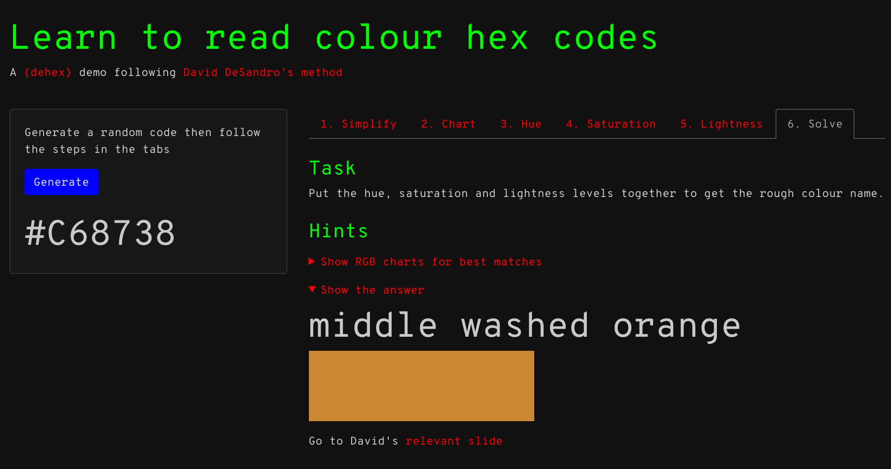
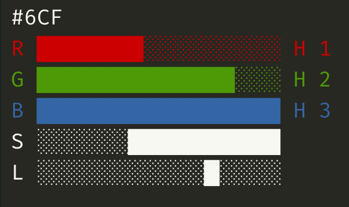

‘Dehex’, from Wiktionary:
To remove a hex (a spell, especially an evil spell).
An R package containing simple functions and a Shiny app to help me train myself to ‘read’ a colour from its hex code. I’m colourblind (a deuteranope) so this might be a useful skill. Read the accompanying blog post for more info.
The DeSandro method
David DeSandro gave a talk at dotCSS 2018 about ‘reading’ colour hex codes by eye to get a colour like ‘dark saturated orange’ (thanks Maëlle).
There are five steps:
- Simplify from a six- to a three-digit hex code
- Create an RGB bar chart from the short hex code
- Assess hue from the chart ‘shape’
- Assess saturation from the RGB range
- Assess lightness from the RGB total
This package contains functions that guide you through that process and can ‘solve’ the hex code for you. I’ve also put them in a Shiny app that’s bundled with the package.
Install
You can install the development version from GitHub.
remotes::install_github("matt-dray/dehex")App
The package contains a Shiny app that generates a random colour hex code and walks you through the steps of DeSandro’s method using functions from the {dehex} package. You can run it with dh_app(). It requires the {shiny} and {bslib} packages, which can both be installed with install.packages(). Here’s a preview:

Functions
Three-digit shorthand
First, convert a full six-character hex code to its three-character shortcode. This takes the first value from each pair of characters.
long <- "#6BCFFA"
short <- dehex::dh_shorten(long)
short
# [1] "#6CF"You could also generate a random one with dh_random().
Bar chart
Use dh_graph() to print to the console a bar chart that shows the decimal values of red (R), green (G) and blue (B) for your shortened hex code.
dehex::dh_graph(short)
# #6CF
# R ███████░░░░░░░░░ H 1
# G █████████████░░░ H 2
# B ████████████████ H 3
# S ░░░░░░██████████
# L ░░░░░░░░░░░█░░░░The RGB columns are printed in colour in RStudio, thanks to the {crayon} package. (You can turn this off by setting the argument crayon = FALSE.)

Note that the chart is adorned by extra information that tells you something about the hue (H, i.e. the relative ‘rank’ of each RGB channel), saturation (S, i.e. the RGB range) and lightness (L, i.e. the RGB average). You can remove these guides by setting the adorn_* arguments to FALSE.
The idea is to compare this to a set of guides that provide rough categorisations of hue, saturation and lightness to generate an English phrase.
Guides
Hue from shape
To assess the hue of your hex code, compare its RGB profile from dh_graph() to the guide provided by dh_guide("H"). The exact amounts don’t matter; it’s the relative values of RGB that we care about. For this reason, the end of each bar shows you the relative rank() of each channel (the smallest value is ranked ‘1’, a tie between the two smallest gives them both a rank of ‘1.5’, etc).
Well, technically my ranking system here has a wider tolerance for ties. So RGB values of 15, 6, and 5 will result in a tie between green and blue because their difference is below a certain threshold (2, but subject to testing).
Click to see the hue guides
dehex::dh_guide("H")
# red
# R ████████████████ H 3
# G █░░░░░░░░░░░░░░░ H 1.5
# B █░░░░░░░░░░░░░░░ H 1.5
#
# green
# R █░░░░░░░░░░░░░░░ H 1.5
# G ████████████████ H 3
# B █░░░░░░░░░░░░░░░ H 1.5
#
# blue
# R █░░░░░░░░░░░░░░░ H 1.5
# G █░░░░░░░░░░░░░░░ H 1.5
# B ████████████████ H 3
#
# yellow
# R ████████████████ H 2.5
# G ████████████████ H 2.5
# B █░░░░░░░░░░░░░░░ H 1
#
# cyan
# R █░░░░░░░░░░░░░░░ H 1
# G ████████████████ H 2.5
# B ████████████████ H 2.5
#
# magenta
# R ████████████████ H 2.5
# G █░░░░░░░░░░░░░░░ H 1
# B ████████████████ H 2.5
#
# orange
# R ████████████████ H 3
# G █████████░░░░░░░ H 2
# B █░░░░░░░░░░░░░░░ H 1
#
# chartreuse
# R █████████░░░░░░░ H 2
# G ████████████████ H 3
# B █░░░░░░░░░░░░░░░ H 1
#
# aquamarine
# R █░░░░░░░░░░░░░░░ H 1
# G ████████████████ H 3
# B █████████░░░░░░░ H 2
#
# azure
# R █░░░░░░░░░░░░░░░ H 1
# G █████████░░░░░░░ H 2
# B ████████████████ H 3
#
# violet
# R █████████░░░░░░░ H 2
# G █░░░░░░░░░░░░░░░ H 1
# B ████████████████ H 3
#
# rose
# R ████████████████ H 3
# G █░░░░░░░░░░░░░░░ H 1
# B █████████░░░░░░░ H 2
#
# grey
# R █████████░░░░░░░ H 2
# G █████████░░░░░░░ H 2
# B █████████░░░░░░░ H 2Saturation from range
To assess the saturation of your hex code, compare its RGB profile from dh_graph() to the guide provided by dh_guide("S"). A larger RGB range means a more saturated colour.
Click to see the saturation guides
dehex::dh_guide("S")
# saturated
# R ████████████████
# G █████████░░░░░░░
# B █░░░░░░░░░░░░░░░
# S ████████████████
#
# washed
# R █████████████░░░
# G █████████░░░░░░░
# B ████░░░░░░░░░░░░
# S ░░░██████████░░░
#
# muted
# R ██████████░░░░░░
# G █████████░░░░░░░
# B ███████░░░░░░░░░
# S ░░░░░░████░░░░░░
#
# grey
# R █████████░░░░░░░
# G █████████░░░░░░░
# B █████████░░░░░░░
# S ░░░░░░░░█░░░░░░░Lightness from total
To assess the lightness of your hex code, compare its RGB profile from dh_graph() to the guide provided by dh_guide("L"). A higher total RGB means it’s lighter in colour, but I’ve chosen to show the mean value as a guide.
Click to see the lightness guides
dehex::dh_guide("L")
# light
# R ████████████████
# G ███████████████░
# B ██████████████░░
# L ░░░░░░░░░░░░░░█░
#
# middle
# R ██████████░░░░░░
# G █████████░░░░░░░
# B ████████░░░░░░░░
# L ░░░░░░░░█░░░░░░░
#
# dark
# R ████░░░░░░░░░░░░
# G ███░░░░░░░░░░░░░
# B ██░░░░░░░░░░░░░░
# L ░░█░░░░░░░░░░░░░The solution
Luckily, dh_solve() returns the ‘answer’ for your colour as a text string. So, for our input #6CF, the ‘answer’ is:
dehex::dh_solve(short)
# [1] "light washed azure"Of course, you could just use this function to get a simple way of communicating colour from hex codes without learning how to do it by ‘reading’ a hex code yourself.
You can also ask to return the relevant bar charts that best describe the hue, saturation and lightness that led to the result.
dehex::dh_solve(short, graphs = TRUE)
# input code: #6CF
# R ███████░░░░░░░░░ H 1
# G █████████████░░░ H 2
# B ████████████████ H 3
# S ░░░░░░██████████
# L ░░░░░░░░░░░█░░░░
#
# hue: azure
# R █░░░░░░░░░░░░░░░ H 1
# G █████████░░░░░░░ H 2
# B ████████████████ H 3
#
# saturation: washed
# R █████████████░░░
# G █████████░░░░░░░
# B ████░░░░░░░░░░░░
# S ░░░██████████░░░
#
# lightness: light
# R ████████████████
# G ███████████████░
# B ██████████████░░
# L ░░░░░░░░░░░░░░█░
# [1] "light washed azure"And if you’re wondering what the colour actually is, you can either set swatch = TRUE in dh_solve(), or use dh_swatch() to generate a plot filled with that colour.
dehex::dh_swatch(short)Code of Conduct
Please note that the {dehex} project is released with a Contributor Code of Conduct. By contributing to this project, you agree to abide by its terms.